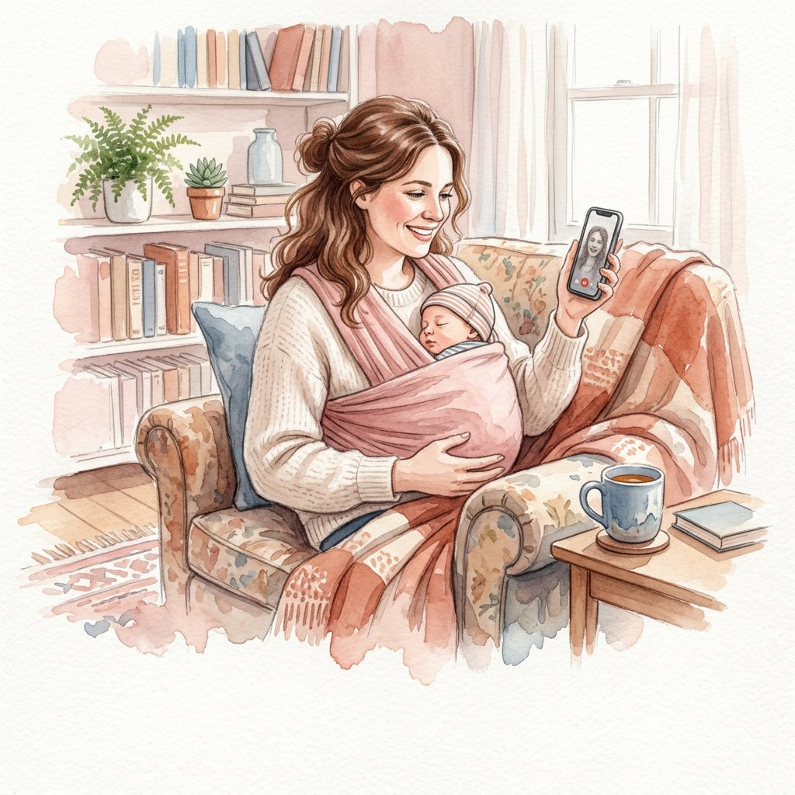
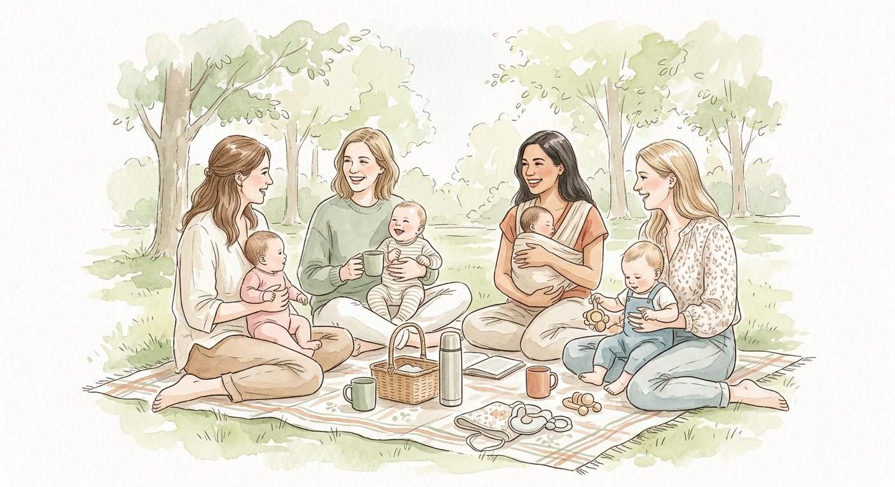
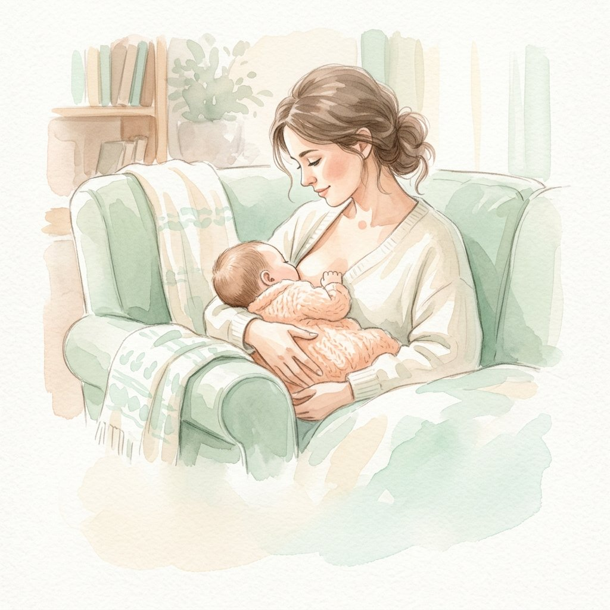

🤱
Грудное вскармливание
Прикладывание и позы, боль и трещины, застои, «мало молока», сцеживание, докорм и уход от него, кризисы, отказ от груди, мягкое завершение ГВ.
Помогаю мамам наладить кормление, понять плач и сон новорождённого и вернуть себе уверенность — без осуждения, страшилок и советов «просто потерпи».
Это самые частые ситуации, с которыми ко мне приходят мамы. Почти всё решается быстрее, чем кажется в три часа ночи.
Вы не «плохая мама» и не «слишком мнительная». Вам просто нужен человек, который спокойно посмотрит на ситуацию со стороны и даст понятный план.
Прикладывание и позы, боль и трещины, застои, «мало молока», сцеживание, докорм и уход от него, кризисы, отказ от груди, мягкое завершение ГВ.
Почему малыш плачет и как его успокоить, ношение на руках и пеленание, купание, кожа и пупок, мягкая адаптация к миру после родов.
Сколько на самом деле спит новорождённый, как организовать день, безопасный совместный сон, что делать, если малыш просыпается каждые 40 минут.
Восстановление после родов, «третий день слёз», усталость и раздражение, как просить о помощи и не тонуть в чужих советах.
От бесплатного гайда до полного сопровождения. Начать можно с малого — и всегда можно дойти дальше.
Важно: я общественный консультант, а не врач. При температуре, сильной боли, уплотнениях в груди, резкой потере веса у малыша — сначала к врачу. Я работаю в связке с медиками и не заменяю их.
В VK или Telegram — в двух словах, что происходит. Я задам пару уточняющих вопросов и предложу подходящий формат и время.
60–90 минут: смотрим прикладывание, обсуждаем вес и ритмы, сон, ваше самочувствие и быт. Без спешки и без нотаций.
Письменно и по пунктам: что делать сегодня, завтра, через три дня, по каким признакам понять, что стало лучше.
Пишете в чат, если что-то пошло не так или появился новый вопрос. Корректируем план по ходу — вы не остаётесь одна.
Всё самое важное про первые недели — в пяти коротких уроках, которые можно смотреть с телефона, пока малыш спит у вас на руках.


Раз в несколько недель мы встречаемся в парках города: мамы, малыши, термос и вопросы. Здесь можно спросить о чём угодно, познакомиться с такими же мамами и просто выдохнуть среди своих.

Общественный консультант по грудному вскармливанию, специалист по новорождённым. Челябинск, работаю также онлайн по всей России.
Я помогаю мамам с первых часов после родов и до завершения кормления. Моя задача — не выдать вам список правил, а разобраться именно в вашей ситуации: как кормите, как спит малыш, как вы себя чувствуете и что реально можно изменить уже сегодня.
Я не осуждаю за смесь, соску и «неправильный» режим. Мы вместе ищем тот вариант, в котором хорошо и малышу, и вам.
Живые отзывы и фото со встреч — в альбомах сообщества ВКонтакте.
Здесь скоро появятся истории мам: «было — стало», короткие и честные.
Уже работали со мной? Буду очень благодарна за пару строк — это помогает другим мамам решиться попросить помощь.
Короткий PDF, который стоит сохранить в телефон ещё до роддома. Внутри — 10 причин плача, что проверить в каждом случае, и понятная шкала «спокоен / в порядке / нужен врач».
Написать «ХОЧУ ГАЙД» в VKОтправлю в ответном сообщении. Без спама и рассылок — только то, о чём вы попросите.
Врач лечит: мастит, инфекции, болезни малыша. Я занимаюсь организацией кормления и ухода — прикладывание, ритмы, количество молока, быт, сон, ваше состояние. При «красных флагах» (температура, сильная боль, уплотнения, резкая потеря веса) я сразу направлю к врачу и дальше буду поддерживать параллельно с лечением.
Да, работает: по видео отлично видно прикладывание, позу, поведение малыша у груди. 90% вопросов решается онлайн. Если пойму, что нужен очный осмотр — скажу честно и предложу выезд (по Челябинску) или врача.
Это даже полезно: увидим, как вы его успокаиваете, и разберём это вместе. Кормить, укачивать, отвлекаться на малыша во время встречи — абсолютно нормально. Мы никуда не спешим.
Нет. Смесь — не провал, а иногда необходимость. Мы посмотрим, можно ли увеличить долю грудного молока и как вам при этом станет легче. Если вы решите остаться на смешанном или искусственном вскармливании — помогу выстроить это спокойно и безопасно.
Идеально — в третьем триместре. За одну встречу можно разобрать первые часы после родов, первое прикладывание, что взять в роддом и как не растеряться в первые дни. Это заметно снижает риск проблем с ГВ.
Оплата переводом или по СБП, после — подтверждаю время. Если до консультации вы поймёте, что передумали, — просто напишите, перенесём или вернём оплату. Отменять и переносить можно, я всё понимаю про жизнь с малышом.
Выезд на дом — по Челябинску. Онлайн-консультации, курс и клуб — для мам из любого города и часового пояса, время подберём.
Даже если пока не готовы записываться: расскажите, что происходит, и я честно скажу, нужна ли вам консультация и какая.